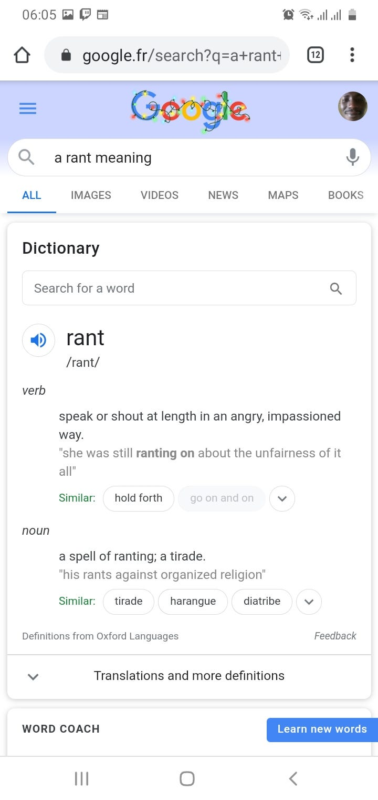

Dec 11, 2020
Talents and jobs creator
Talents and jobs creator, this person that has the power to create jobs and nurture talents. This kind of person is what we call badly leader which is a thin and light word for describing this kind of person. They leverage because they create something bigger than them. Nothing is bigger than a human being says a religious tradition. I say that’s why they create things bigger than themselves.
It is easier if you know you are nothing at the same time.
You can call them linchpin but it is just a coin like a pointer to highlight them I could link this with book pointers and was willing to say in my last rant but said to myself wait a minute what a rant is?. Naturally, I went to Google and found this

I am not doing that and never so every time you read rant please take it as a post or article or blog…
Telling ideas not saying bad things to people is the life I wanna be living.